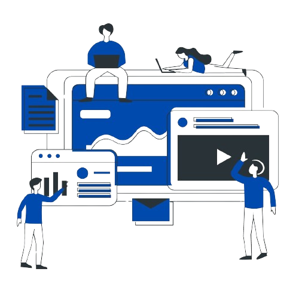

TREINAMENTO
O treinamento é uma jornada valiosa que nos permite explorar os intricados detalhes de nossa própria personalidade. Ao buscar conhecimento sobre nós mesmos, abrimos as portas para uma consulta íntima, onde descobrimos nuances que muitas vezes passam despercebidas. É nesse processo de autoexploração que recebemos uma riqueza de informações, como peças de um quebra-cabeça se encaixando para revelar quem somos. O treinamento, assim, torna-se um guia confiável nessa busca contínua de autoconhecimento, oferecendo-nos as ferramentas para compreender e apreciar as complexidades de nossa própria existência.